8 UNIDAD IV: EL INFORME PSICOPEDAGÓGICO
⮚ Objetivo 1: Identificar las características y componentes del informe psicopedagógico.
⮚ Objetivo 2: Reconocer las falencias al momento de elaborar el informe y cómo evitarlas.
⮚ Objetivo 3: Aplicar las principales recomendaciones a la elaboración del informe psicopedagógico.
El informe psicopedagógico es un documento en el que refleja de forma clara y compleja lo siguiente:
La situación evolutiva y educativa actual de un alumno o alumna en los diferentes contextos de desarrollo y enseñanza.
La necesidad específica de apoyo educativo, si la hubiese.
Una propuesta organizativa y curricular orientativa del centro para el alumno. Una orientación hacia el tipo de ayuda que puede necesitar el alumno o alumna durante su escolarización para facilitar y estimular su progreso.
El informe psicopedagógico es un documento que tiene dos finalidades muy importantes:
Por un lado, explica la situación evolutiva y educativa de un alumno o alumna en los diferentes contextos de desarrollo.
Por otro, permite concretar las necesidades educativas del alumno a través de una propuesta curricular adecuada y mediante la especificación del tipo de ayuda que necesita para facilitar y estimular su progreso.
8.1 Principales características del Informe Psicopedagógico
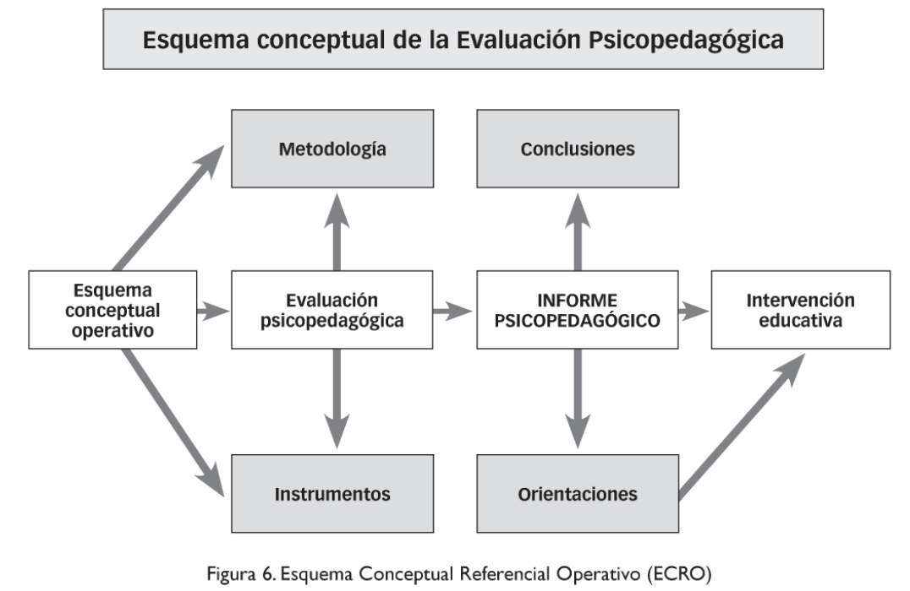
Metodología Conclusiones
Esquema conceptual operativo. Evaluación psicopedagógica. INFORME PSICOPEDAGÓGICO. Intervención educativa.
Instrumentos Orientaciones
Ejercicio de desarrollo
María, una niña de 10 años con ojos grandes y llenos de sueños, se encontraba sentada en su pupitre, observando con desánimo cómo sus compañeros se sumergían en las páginas de sus libros. Ella, en cambio, luchaba contra una marea de letras que parecían burlarse de su esfuerzo. Las palabras se transformaban en borrones indescifrables, y las oraciones se convertían en un laberinto sin salida.
El fracaso era una sombra que la perseguía desde hacía tiempo. En lectura y matemáticas, las notas rojas manchaban su expediente, y los comentarios de sus profesores resonaban en su mente como ecos de frustración. María se sentía incapaz, una niña atrapada en una jaula invisible de dificultades.
8.1.1 Características del informe psicopedagógico.
● Objetivos
● Información inicial
● Evaluación del alumno
● Procedimientos específicos.
● Evaluación de la intervención
● Recomendaciones.
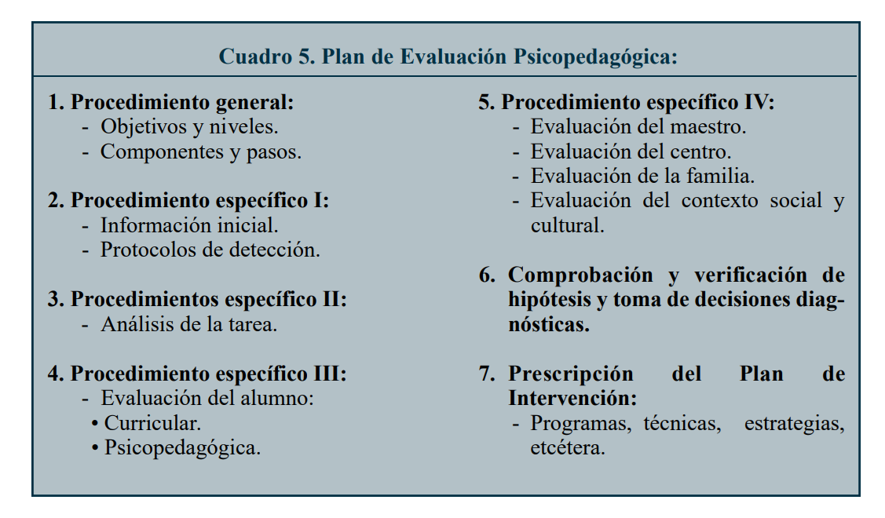
1. Procedimiento general: Objetivos y niveles. Componentes y pasos.
2. Procedimiento específico I: Información inicial. Protocolos de detección.
3. Procedimientos específico II: Análisis de la tarea.
4. Procedimiento específico III: Evaluación del alumno: • Curricular. • Psicopedagógica.
5. Procedimiento específico IV: Evaluación del maestro. Evaluación del centro. Evaluación de la familia. Evaluación del contexto social y cultural.
6. Comprobación y verificación de hipótesis y toma de decisiones diag- nósticas.
7. Prescripción del Plan de Intervención: Programas, técnicas, estrategias, etcétera.
8.1.2 Ejemplos de informes Psicopedagógicos
8.2 Apartados que componen el Informe Psicopedagógico
Implica los datos de filiación, conocimiento de aspectos necesarios para identificar al paciente o estudiante, posee o no discapacidad, institución, fecha de evaluación (indica la fecha en la que empieza la evaluación, considerando que puede tomar más de un día) (Mineduc, 2019)
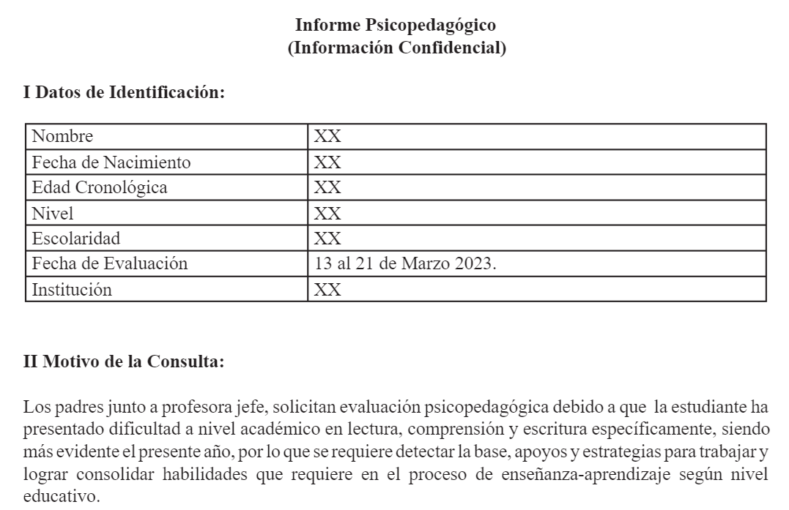
8.2.1 Espacio de Anamnesis y motivo de consulta
Anamnesis
Información vital de la persona que permita identificar posibles causas de las dificultades.
Contexto familiar y escolar
Enfocado en el aspecto familiar y escolar durante la historia de vida del estudiante, en relación con el motivo de consulta.
Ejercicio de desarrollo (2da parte)
…Un día, la directora de la escuela, una mujer con una sonrisa amable y ojos comprensivos, se acercó a María. Sus palabras fueron como un rayo de esperanza que se abrió paso en la oscuridad. Le habló de una evaluación psicoeducativa, una oportunidad para comprender las dificultades que enfrentaba y encontrar las herramientas necesarias para superarlas.
María se aferró a esa esperanza como a un salvavidas en medio de un mar de incertidumbre. La evaluación reveló un diagnóstico que le dio nombre a sus luchas: Trastorno por Déficit de Atención e Hiperactividad (TDAH) y Discapacidad Específica del Aprendizaje (DEA) en lectura y matemáticas…
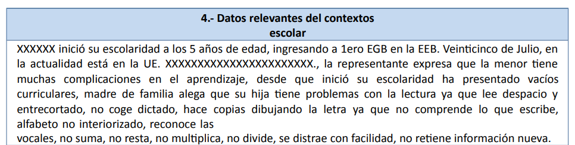
8.2.2 Espacio de instrumentos aplicados y análisis de resultados
Instrumentos Aplicados
Implica la evaluación por área o ámbito y la utilización de técnicas para recolectar información (Test)
Análisis de resultados
Implica la presentación de resultados obtenidos durante las entrevistas, pruebas, escalas, etc.
Ejercicio de Desarrollo (3ra parte)
…Con el diagnóstico en mano, María emprendió un nuevo camino. Se unió a un programa de educación especial donde recibió instrucción individualizada en las áreas donde más lo necesitaba. Además, comenzó a asistir a terapia conductual para aprender a manejar sus síntomas de TDAH.
El camino no fue fácil. Hubo días de desánimo y momentos de duda. Pero María perseveró,
impulsada por la esperanza de un futuro diferente. Sus padres, pilares de apoyo
incondicional, la acompañaron en cada paso, brindándole amor y comprensión…
8.2.3 Conclusiones y Recomendaciones
Conclusiones
La síntesis de la información obtenida del análisis de resultados y su apreciación sobre el estudiante.
Recomendaciones
Sugerencias para sostener la efectividad de la intervención y mejora del estudiante.
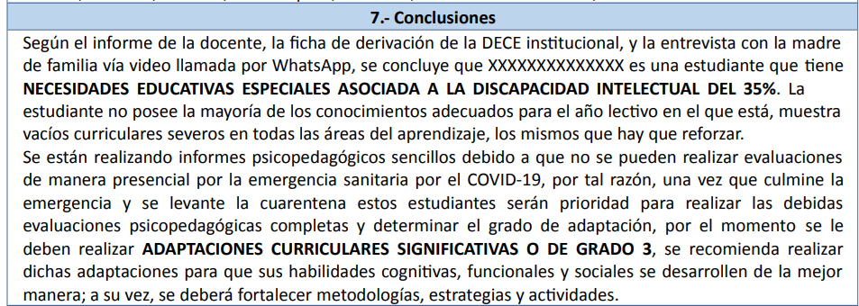
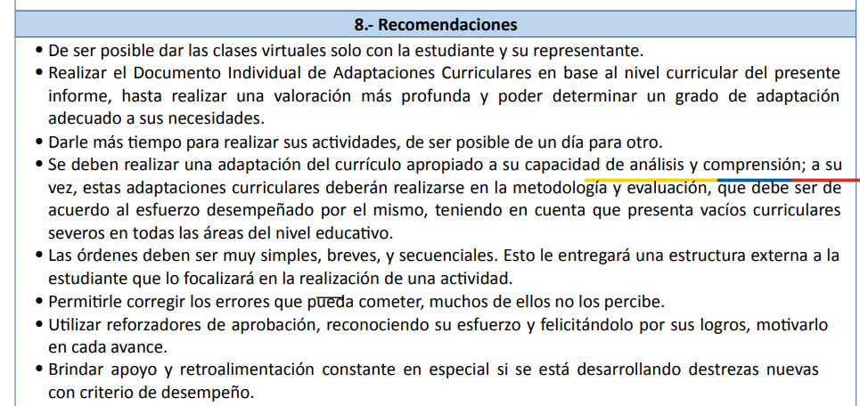
7.- Conclusiones Según el informe de la docente, la ficha de derivación de la DECE institucional, y la entrevista con la madre de familia vía video llamada por WhatsApp, se concluye que XXXXXXXXXXXXXX es una estudiante que tiene NECESIDADES EDUCATIVAS ESPECIALES ASOCIADA A LA DISCAPACIDAD INTELECTUAL DEL 35%. La estudiante no posee la mayoría de los conocimientos adecuados para el año lectivo en el que está, muestra vacíos curriculares severos en todas las áreas del aprendizaje, los mismos que hay que reforzar. Se están realizando informes psicopedagógicos sencillos debido a que no se pueden realizar evaluaciones de manera presencial por la emergencia sanitaria por el COVID-19, por tal razón, una vez que culmine la emergencia y se levante la cuarentena estos estudiantes serán prioridad para realizar las debidas evaluaciones psicopedagógicas completas y determinar el grado de adaptación, por el momento se le deben realizar ADAPTACIONES CURRICULARES SIGNIFICATIVAS O DE GRADO 3, se recomienda realizar dichas adaptaciones para que sus habilidades cognitivas, funcionales y sociales se desarrollen de la mejor manera; a su vez, se deberá fortalecer metodologías, estrategias y actividades.
8.- Recomendaciones • De ser posible dar las clases virtuales solo con la estudiante y su representante. • Realizar el Documento Individual de Adaptaciones Curriculares en base al nivel curricular del presente informe, hasta realizar una valoración más profunda y poder determinar un grado de adaptación adecuado a sus necesidades. • Darle más tiempo para realizar sus actividades, de ser posible de un día para otro. • Se deben realizar una adaptación del currículo apropiado a su capacidad de análisis y comprensión; a su vez, estas adaptaciones curriculares deberán realizarse en la metodología y evaluación, que debe ser de acuerdo al esfuerzo desempeñado por el mismo, teniendo en cuenta que presenta vacíos curriculares severos en todas las áreas del nivel educativo. • Las órdenes deben ser muy simples, breves, y secuenciales. Esto le entregará una estructura externa a la estudiante que lo focalizará en la realización de una actividad. • Permitirle corregir los errores que pueda cometer, muchos de ellos no los percibe. • Utilizar reforzadores de aprobación, reconociendo su esfuerzo y felicitándolo por sus logros, motivarlo en cada avance. • Brindar apoyo y retroalimentación constante en especial si se está desarrollando destrezas nuevas con criterio de desempeño.
8.3 Deficiencias del Informe psicopedagógico y cómo evitarlas.
1. Errores en la estructura y organización:
● Falta de claridad y coherencia en la estructura
● Ausencia de cohesión entre las partes del informe
● Errores gramaticales y ortográficos (Suárez-Álvarez, J., & Pedrosa, I. 2016)
2. Errores en la evaluación de la información:
● Falta de rigor en la evaluación de datos
● Interpretación errónea de los resultados
● Omisión de áreas relevantes de evaluación
(Fernández et al, 2014)
3. Errores en las conclusiones y recomendaciones:
● Conclusiones vagas o poco específicas
● Recomendaciones poco claras o irrealistas
● No considerar diversas opciones de intervención.
(Rodríguez Sutil, C. 2013).
4. Errores en la presentación del informe:
● Falta de claridad en la presentación de datos
● Presentación confusa de conclusiones y recomendaciones
● Diseño visual poco atractivo o profesional
(Martínez et al, 2014
5. Errores éticos:
● Violación de la confidencialidad
● Falta de respeto a la autonomía del estudiante
● Incumplimiento de principios de justicia e igualdad
(Lindsay, G. 2009)
Ejercicio de desarrollo (4ta parte)
…A medida que avanzaba en el programa, María comenzó a experimentar la alegría del aprendizaje. Las palabras ya no eran enemigas, sino herramientas para descubrir nuevos mundos y expandir su conocimiento. Los números dejaron de ser un enigma y se convirtieron en aliados para resolver problemas y explorar las maravillas de las matemáticas.
María descubrió que su mente era capaz de grandes cosas. Su inteligencia, que antes se veía opacada por las dificultades, ahora brillaba con luz propia. Su autoestima creció, y su confianza en sí misma se fortaleció…
8.4 Consejos de elaboración del Informe psicopedagógico
¿Qué analogía podríamos hacer entre el video observado y el informe psicopedagógico?
¿De qué otra manera podemos interpretar el informe psicopedagógico y realizar la utilidad del mismo en la atención a las dificultades en el aprendizaje de los niños que lo requieren?
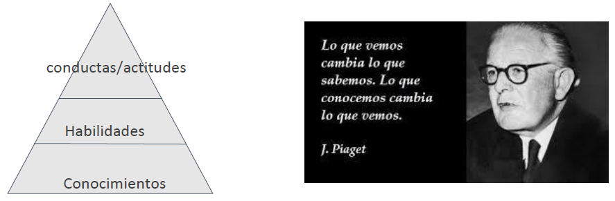
Conductas/actitudes
Habilidades
Conocimientos
Lo que vemos cambia lo que sabemos. Lo que conocemos cambia lo que vemos.
- J. Piaget
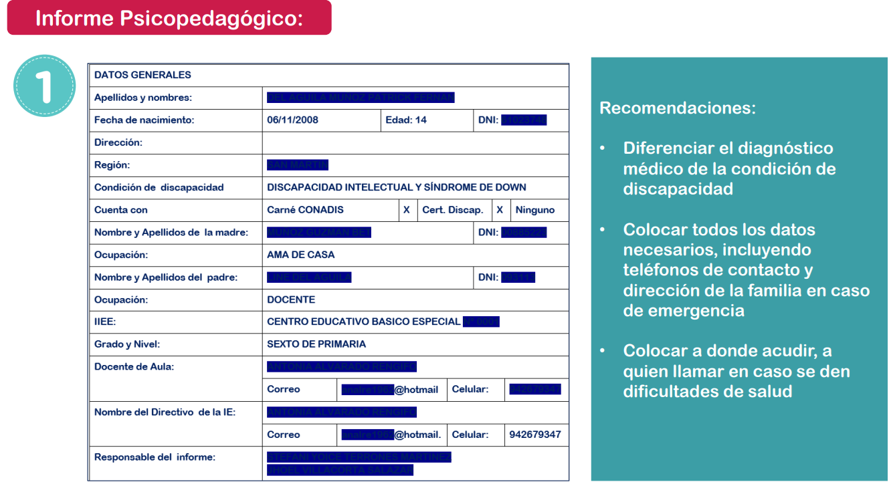
Recomendaciones:
Diferenciar el diagnóstico médico de la condición de discapacidad
Colocar todos los datos necesarios, incluyendo teléfonos de contacto y dirección de la familia en caso de emergencia
Colocar a donde acudir, a quien llamar en caso se den dificultades de salud
8.4.1 Fortalezas del estudiante
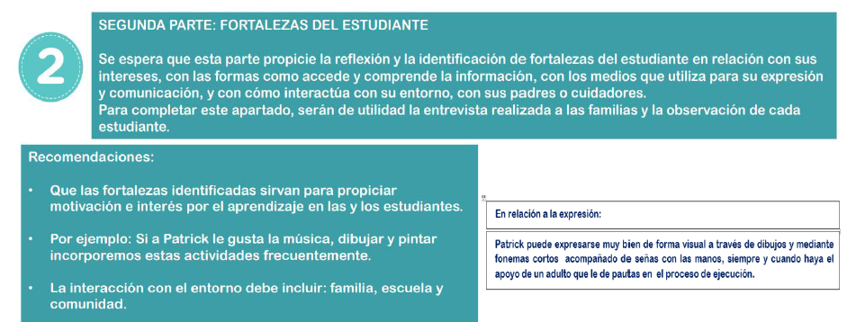
SEGUNDA PARTE: FORTALEZAS DEL ESTUDIANTE
Se espera que esta parte propicie la reflexión y la identificación de fortalezas del estudiante en relación con sus intereses, con las formas como accede y comprende la información, con los medios que utiliza para su expresión y comunicación, y con cómo interactúa con su entorno, con sus padres o cuidadores. Para completar este apartado, serán de utilidad la entrevista realizada a las familias y la observación de cada estudiante.
Recomendaciones:
Que las fortalezas identificadas sirvan para propiciar motivación e interés por el aprendizaje en las y los estudiantes.
Por ejemplo: Si a Patrick le gusta la música, dibujar y pintar incorporemos estas actividades frecuentemente.
La interacción con el entorno debe incluir: familia, escuela y comunidad.
En relación a la expresión: Patrick puede expresarse muy bien de forma visual a través de dibujos y mediante fonemas cortos acompañado de señas con las manos, siempre y cuando haya el apoyo de un adulto que le de pauttas en el proceso de ejecución.
8.4.2 Historia del estudiante
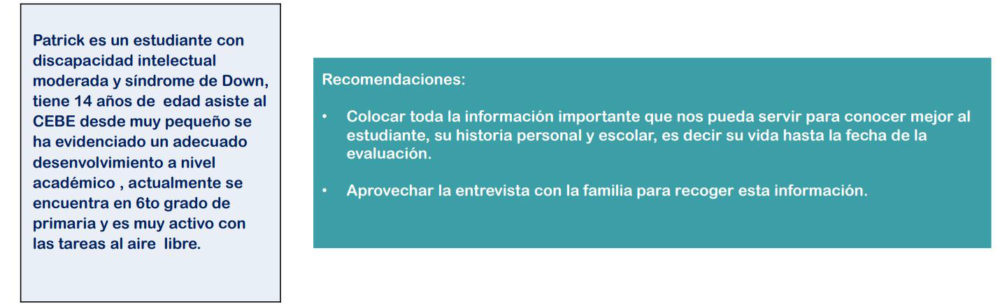
Patrick es un estudiante con discapacidad intelectual moderada y síndrome de Down, tiene 14 años de edad asiste al CEBE desde muy pequeño se ha evidenciado un adecuado desenvolvimiento a nivel académico, actualmente se encuentra en 6to grado de primaria y es muy activo con las tareas al aire libre.
Recomendaciones:
Colocar toda la información importante que nos pueda servir para conocer mejor al estudiante, su historia personal y escolar, es decir su vida hasta la fecha de la evaluación.
Aprovechar la entrevista con la familia para recoger esta información.
8.4.3 Evaluación de destrezas y competencias.
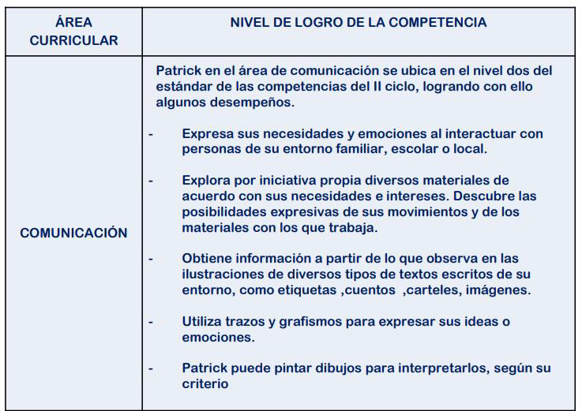
ÁREA CURRICULAR: COMUNICACIÓN
NIVEL DE LOGRO DE LA COMPETENCIA
Patrick en el área de comunicación se ubica en el nivel dos del estándar de las competencias del II ciclo, logrando con ello algunos desempeños.
Expresa sus necesidades y emociones al interactuar con personas de su entorno familiar, escolar o local.
Explora por iniciativa propia diversos materiales de acuerdo con sus necesidades e intereses. Descubre las posibilidades expresivas de sus movimientos y de los materiales con los que trabaja.
Obtiene información a partir de lo que observa en las ilustraciones de diversos tipos de textos escritos de su entorno, como etiquetas, cuentos, carteles, imágenes.
Utiliza trazos y grafismos para expresar sus ideas o emociones.
Patrick puede pintar dibujos para interpretarlos, según su criterio
Evaluar todas las áreas y competencias del nivel o etapa en el que se encuentra la o el estudiante (inicial, EGB o Bachillerato)
Definir bien qué desempeños del ciclo (edades, aulas o grados) la o el estudiante ha logrado.
Conocer bien los estándares de cada competencia, no colocar información que no corresponde.
Esta parte del IPP es muy importante ya que a partir que aquí nos trazaremos los estándares de las competencias a desarrollar en el trabajo pedagógico.
(Ministerio de Educación de Perú, 2023)
Ejercicio de Desarrollo (parte final)
Hoy en día, María es una adolescente llena de vida y sueños. El TDAH y la DEA ya no son obstáculos que la limitan, sino desafíos que ha aprendido a superar. Se ha convertido en una estudiante destacada, una amiga leal y una persona inspiradora.
Su historia es un recordatorio de que las dificultades no definen a las personas. Detrás de cada obstáculo hay una oportunidad para aprender, crecer y descubrir el potencial que llevamos dentro. María es un ejemplo de que con determinación, apoyo y las herramientas adecuadas, cualquier sueño puede convertirse en realidad.
Preguntas de Autoevaluación
¿Qué he aprendido?
¿Cómo lo he aprendido?
¿Qué me resulta más fácil o más difícil?
¿En qué otras situaciones puedo utilizar este nuevo conocimiento?